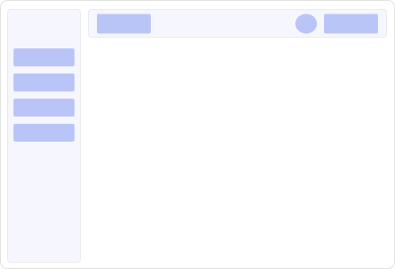
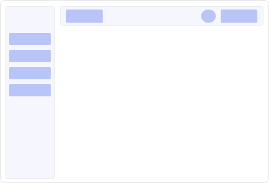
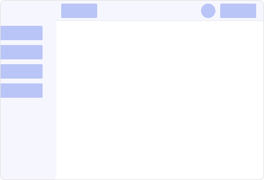
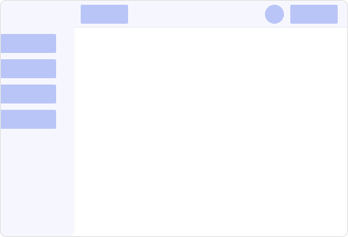
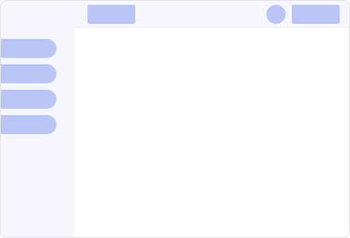
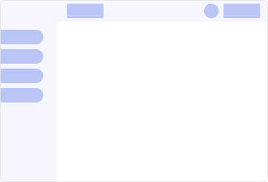
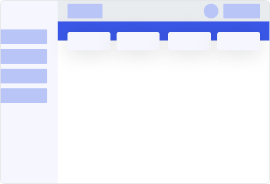
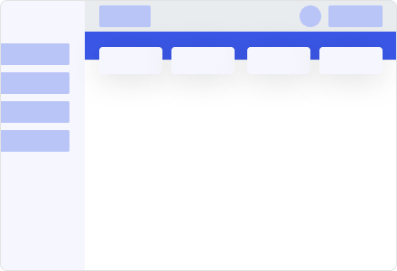

Sunnah-Sunnah Nabi SAW


Sunnah di waktu sebelum Shubuh
-
Daftar list
-
Amalan yang dicontohkan oleh Nabi SAW setelah bangun dari tidur.
- Menggosok atau membersihkan gigi dengan siwak
- Membaca wirid dan zikir ketika bangun dari tidur
- Menyeka wajah dari rasa kantuk
- Memandang ke arah langit
- Membaca sepuluh ayat terakhir surah Ali Imran
- Membasuh tangan sebanyak tiga kali.
- Membasahi hidung bagian dalam dengan air dan menghembuskannya sebanyak tiga kali
- Berwudhu
-
Sunnah-sunnah Wudhu
-
Shalat Tahajjud dan Witir
Sunnah ini disebutkan pada riwayat Hudzaifah -Radhiyallahu Anhu-, ia berkata, “Setiap kali Nabi -Shallallahu Alaihi wa Sallam- bangkit dari tidurnya, beliau selalu membersihkan mulutnya dengan siwak.” (HR. Bukhari no.245, Muslim no.255) Lafaz pada riwayat imam Muslim adalah, “Setiap kali Nabi -Shallallahu Alaihi wa Sallam- bangun untuk melaksanakan shalat tahajjud, beliau selalu membersihkan mulutnya dengan siwak.” (HR. Muslim no.255)
Sunnah ini disebutkan dalam kitab Shahih Bukhari riwayat Hudzaifah, ia berkata, “Setiap kali Nabi -Shallallahu Alaihi wa Sallam- hendak beranjak tidur, beliau selalu mengucapkan, ‘bismikallahumma amutu wa ahya (dengan nama-Mu ya Allah aku hidup dan aku mati).’ Lalu jika beliau bangun dari tidurnya, beliau mengucapkan, ‘Alhamdulillahil-ladzi ahyana ba’da ma amatana wa ilaihin-nusyur (segala puji bagi Allah yang telah menghidupkan kami kembali setelah mati, dan kepada-Nya lah kami kembali).’” (HR. Bukhari no.6324, Muslim no.2711 melalui riwayat Al-Barra)
Ketiga sunnah Nabi ini disebutkan dalam sebuah hadits muttafaq alaih yang diriwayatkan Ibnu Abbas, bahwa pada suatu malam ia pernah menginap di kediaman Maimunah, istri Nabi yang sekaligus juga bibi Ibnu Abbas sendiri. Ia berkisah, “Ketika itu aku berbaring di bagian bantal sisi yang lebar, sedangkan Rasulullah -Shallallahu Alaihi wa Sallam- dan istrinya tidur di bagian bantal sisi yang panjang. Ketika itu Rasulullah -Shallallahu Alaihi wa Sallam- tidur hingga tengah malam, atau kurang sedikit atau lebih sedikit. Lalu Rasulullah -Shallallahu Alaihi wa Sallam- bangun dari tidurnya dan langsung duduk seraya mengusap wajah beliau dari sisa rasa kantuknya dengan tangan. Kemudian beliau membaca sepuluh ayat terakhir surah Ali Imran. Setelah itu beliau bangkit untuk menuju ke geriba (tempat air) yang tergantung untuk mengambil wudhu. Setelah menyelesaikan wudhunya dengan sebaik-baik wudhu, maka beliau pun segera melaksanakan shalat.” (HR. Bukhari no.183, Muslim no.763)
Imam Muslim juga menyebutkan riwayat lainnya (no.256), “..Lalu Nabi -Shallallahu Alaihi wa Sallam- bangun dari tidurnya ketika hampir di penghujung malam. Setelah itu beliau keluar rumah dan melihat ke atas langit seraya membaca ayat berikut ini dari surah Ali Imran, ‘Sesungguhnya dalam penciptaan langit dan bumi, dan pergantian malam dan siang terdapat tanda-tanda (kebesaran Allah) bagi orang yang berakal.’ (Ali Imran:190)”
Yang dimaksud dengan menyeka wajah dari rasa kantuk adalah, mengusap kedua mata untuk menghilangkan bekas-bekas tidur dengan menggunakan kedua tangan
Adapun yang dimaksud dengan geriba adalah, kantong kulit yang biasa digunakan untuk menyimpan air pada zaman dahulu
Pada riwayat Imam Muslim yang terpisah, ada penjelasan bagi mereka yang ingin menerapkan sunnah ini secara sempurna. Yaitu dengan memulai bacaan ayatnya dari firman Allah, “Sesungguhnya dalam penciptaan langit dan bumi, dan pergantian malam dan siang..” dan seterusnya hingga akhir surah tersebut.
Sunnah ini disebutkan dalam hadits yang diriwayatkan dari Abu Hurairah -Radhiyallahu Anhu-, bahwasanya Nabi -Shallallahu Alaihi wa Sallam- pernah bersabda, “Apabila salah seorang dari kalian bangun dari tidurnya, maka janganlah ia memasukkan tangannya secara langsung ke dalam bejana air hingga ia membasuh tangannya itu sebanyak tiga kali. Karena ia tidak menyadari kemana kah tangannya berlabuh saat ia sedang tidur.” (HR. Bukhari no.162, Muslim no.278)
Sunnah ini disebutkan dalam sebuah hadits yang diriwayatkan dari Abu Hurairah -Radhiyallahu Anhu-, bahwasanya Nabi -Shallallahu Alaihi wa Sallam- pernah bersabda, “Apabila salah seorang di antara kalian bangun dari tidurnya, maka hendaknya ia membasahi hidungnya dengan air sebanyak tiga kali. Karena syaitan telah menginap di dalam hidungnya selama ia tidur.” (HR. Bukhari no.3295, Muslim no.238) Lafaz pada riwayat Imam Bukhari disebutkan, “Apabila salah seorang di antara kalian bangun dari tidurnya, lalu ia berwudhu maka hendaknya ia membasahi hidungnya dengan air sebanyak tiga kali..” (HR. Bukhari no.3295)
Sunnah ini disebutkan pada riwayat Ibnu Abbas -Radhiyallahu Anhumayang telah kami sampaikan sebelumnya, yaitu ketika Nabi -Shallallahu Alaihi wa Sallam- bangun dari tidurnya dan hendak melaksanakan shalat. Beliau pergi menuju geraba yang tergantung untuk mengambil wudhu.
Settings
Scheme
Color Customizer
Scheme Direction

 LTR
LTR

 RTL
RTL
Sidebar Color
Sidebar Types

 Mini
Mini

 Hover
Hover
 
Boxed

Boxed
Sidebar Active Style
 
Rounded One Side

Rounded One Side
 Rounded All
Rounded All
 
Pill One Side

Pill One Side

 Pill All
Pill All
Navbar Style
 Glass
Glass

 Color
Color
 
Sticky

Sticky

 Transparent
Transparent